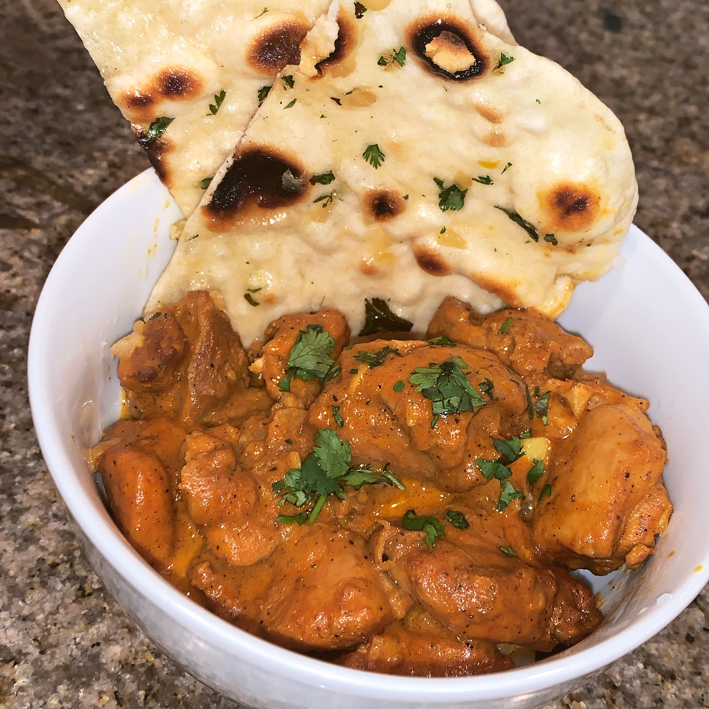

Garlic Naan

Garlic Naan
Whether it is used to get ever last drop of sauce or to buffer the intense flavor and heat of some dishes, Garlic Naan is sure to make a great addition to any Indian curry dish.
Ingredients
- ½ cup warm water
- 1 teaspoon white sugar
- 1 (.25 ounce) package active dry yeast
For the Garlic Butter:
- ¼ cup butter
- 2 cloves garlic, minced
- ¼ cup plain yogurt
- 2 cups bread flour, or more as needed
- 1 teaspoon kosher salt
- ¼ cup chopped cilantro (Optional)